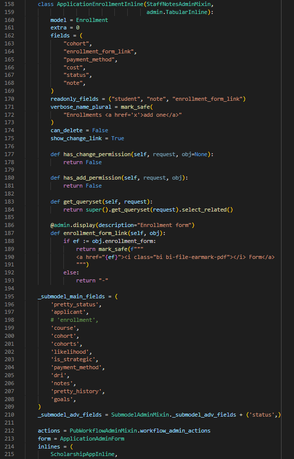
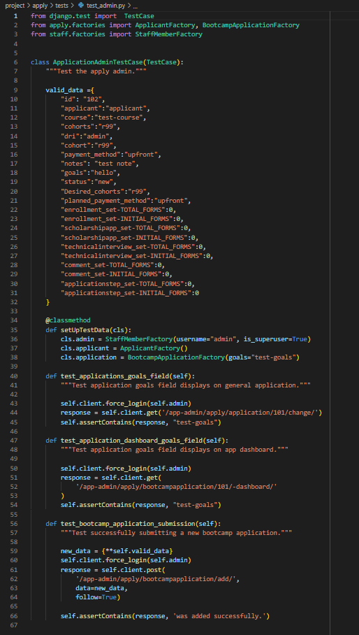
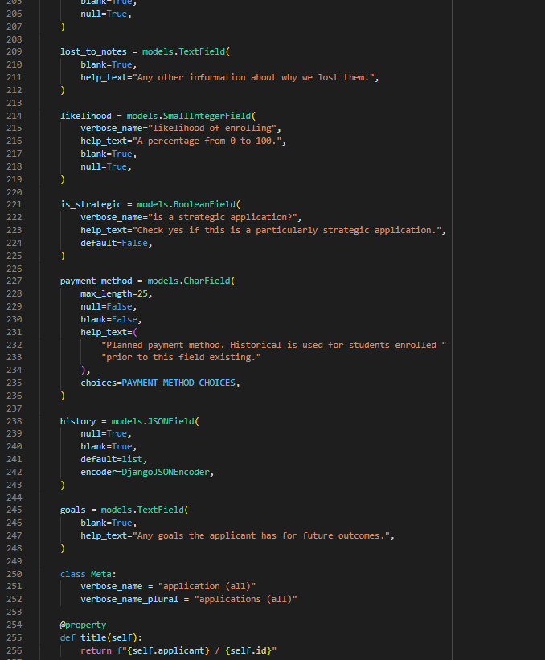
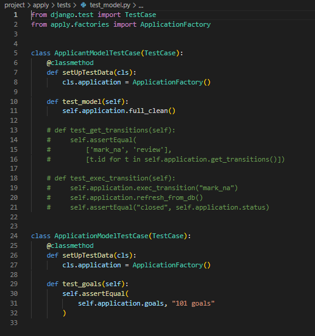

React | Node | Express | PostgreSQL
Jobly is a job listing single page React application with authentication and search functionality. A user registers or logs in and receives a personalized login confirmation message and private routes accessible only through authentication. Users can browse all job listings and companies, as well as search by company name or job title.
Flask | PostgreSQL
Warbler is a Twitter clone Flask app with user authorization and authentication. Once registered or logged in, a user sees a feed of 100 most recent "warbles" from only users they follow or their own. Users can post "warbles", follow/unfollow other users, like others' "warbles", and search for users. Profile editing features data validation and CSRF protection.
Django | PostgreSQL | REST | SASS
The Student Information System (SIS) supports the students and staff of the Rithm School full stack web development program.
As an intern, I completed tickets in an agile environment that included building new features, debugging, and writing unit and integration tests while maintaining 98% test coverage.
While I cannot provide access to the proprietary git repository, I can share screen shots from a ticket I completed to add a field and initialize testing for the newest SIS feature.
Added goals field to _submodel_main_fields (line 208):
Wrote entire test file for apply admin:
Added goals to Application model (lines 245-248):
Wrote entire test file for apply models:
